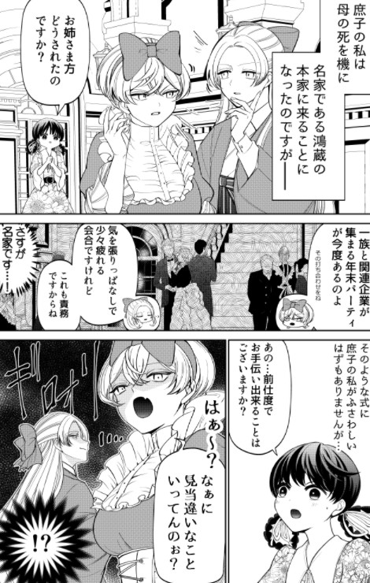

PicaeYO
了解漫界新闻

“动漫”是动画和漫画的合称与缩写。在其他语言相当少用。随着现代传媒技术的发展，动画（animation或anime）和漫画（comics，manga；特别是故事性漫画）之间联系日趋紧密，两者常被合而为“动漫”。
日本是制作动漫最出名的国家之一。 惯用说法有“动漫爱好者”、“动漫展览会”、“动漫产业”等等。中国大陆还有以“动漫志”为名的杂志，把这个新生词推广到整个社会，尤其在青少年中甚为常用。在日本 动漫
、大中华等许多地方，日本动漫十分流行，并逐渐成为了一种文化时尚，故以中文提及“动漫”时多指日本动漫或日式动漫。Manga为日语“漫画”的英语译音
，现在manga本身也涵盖漫画产业的意思。 “动漫”一词在1996年以前在中国大陆并没有出现这个统一的概念，2者是分立而互有联系。此词的出现和推广，
源于在98年全中国第一家首先拔地而起的动漫资讯杂志《动漫时代（ANIME COMIC TIME）》，因此“动漫”一词才得以出现并慢慢深入人心成为全中国动漫
迷常用的词汇和动画与漫画的总称。而“动漫”一词首创则是源于97年创刊的《漫友》杂志。 动漫是通过制作，使一些有或无生命的东西拟人化、夸张化，赋予
其人类的一切感情、动作。或将架空的场景加以绘制，使其真实化。在日漫中也有将生活场景片段绘出的漫画。这也算是艺术的表达的形式。就像文字用小说表
达，而图片用绘画表达是很相似的。 其中漫画对于我们来说是怎样存在的呢？漫画通常是以书刊形式与大家见面，它轻松幽默、易阅读、读者年龄广，是在各
式出版品中商业性最强的，因着漫画衍生而出的的产品，其中之利润更是画风和类型(14张)令人眼红。而动画，顾名思义便是可以活动的连环画剧。其实正
是漫画奠定了动画的基础。漫画与动画作为美术的一部分，从艺术的一个角度展示人类的文化与文明，反映人类的精神，而当今世界也形成了以美国和日本为
首的局面，其中日本尤为突出，日本动漫已成为日本民族的象征。但美国作为世界文化的象征，聚集世界各地才华横溢的艺术家，以迪斯尼为首，创造着雅致的
画廊。面向儿童的，就该纯真；面向成人的，就该美妙。动漫画也是心灵的艺术，也就应该有超越思维的永恒…… 我们可以继续的编造一个个漫画，把快乐传给
所有人，让他们从漫画中得到知识和快乐！！